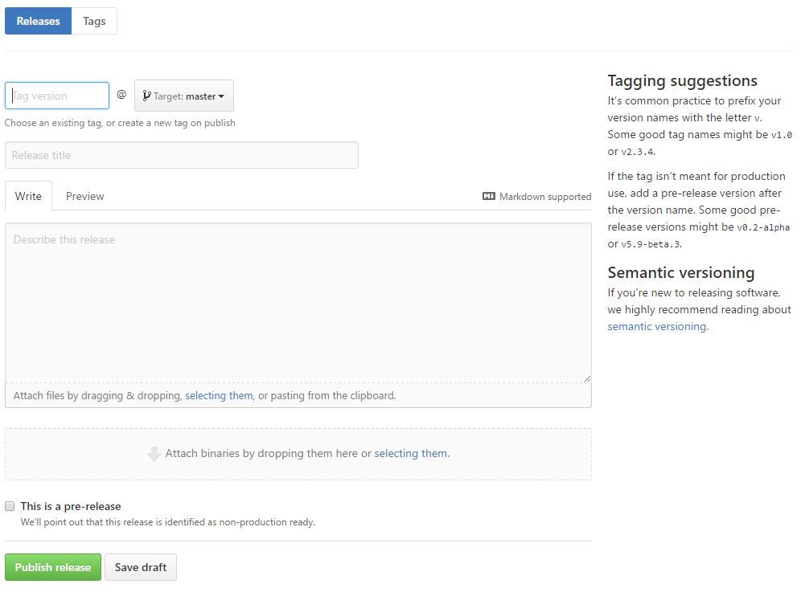

Versionamento e controle de qualidade
Versionamento semântico
Um dos maiores problemas no desenvolvimento de projetos é o controle das diferentes versões envolvidas. Para isso, muitas vezes utilizamos versões numéricas,mas cujos números não tem um significado muito claro, o que pode gerar confusão e problemas de processo variados.
Para organizar esse processo, foi criado o conceito de versionamento semântico. Esse conceito defende o seguinte:
Dado um número de versão MAJOR.MINOR.PATCH, incremente a:
- versão Maior(MAJOR): quando fizer mudanças incompatíveis na API,
- versão Menor(MINOR): quando adicionar funcionalidades mantendo compatibilidade, e
- versão de Correção(PATCH): quando corrigir falhas mantendo compatibilidade.
Rótulos adicionais para pré-lançamento(pre-release) e metadados de construção(build) estão disponíveis como extensão ao formato MAJOR.MINOR.PATCH.
Dessa forma, está visível a compatibilidade de diferentes versões de software apenas de se olhar o número das versões. Esse é o principal benefício dessa metodologia. Quanto aplicada a projetos de games, podemos interpretá-la da seguinte maneira:
- MAJOR como um grande milestone do projeto (alfa, beta, gold, updates-dlc);
- MINOR novas funcionalidades e correções de bugs grandes;
- PATCH correções de bugs e alterações pequenas em features existentes.
Versões também podem ser fixadas para uso posterior utilizando a ideia de tags ou releases presentes em sistemas de gerenciamento de versão como Git.

Exemplo da tela de releases do GitHub.
Gerenciamento de versões e Git
O uso de sistemas de versionamento e controle de código é fundamental no desenvolvimento de software. Alguns tipos principais são Git, Mercurial e SVN. Vamos falar sobre Git.
Esse tipo de controle de repositório (o que seria o seu projeto) é utilizado por muitas ferrametnas externas, como por exemplo o Cloud Build da Unity, como fonte para serviços de compilação e distribuição automática para teste. Saber utilizar um repositório é requisito básico para poder utilizar essas ferramentas de forma efetiva.
Exemplo online interativo
Clique aqui para acessar o https://try.github.io/. Vamos seguir esse tutorial por algumas etapas.
Arquivos a ignorar
Em uma pasta de projeto que está sendo versionada é comum querer ignorar alguns arquivos que não são necessários para definir o projeto ou que serão gerados automaticamente pela máquina de cada usuário. Isso é definido em um arquivo de ignore. No caso do git, ele se chama .gitignore.
Abaixo, um exemplo de .gitignore para uso em um repositório com múltiplos projetos da Unity. Repare na inclusão de todos os arquivos .meta e na exclusão das pastas Temp, Library e Obj.
**[Ll]ibrary/
**[Tt]emp/
**[Oo]bj/
# Autogenerated VS/MD solution and project files
**.csproj
**.unityproj
**.sln
**.apk
**.sln.DotSettings.user
**.suo
**.userprefs
**.pidb
# include meta files
!**.meta
Controle de qualidade
Quando o projeto alcança determinados milestones, ou etapas significativas, é importante realizar uma rodada de testes. Esse esforço em testar funcionalmente jogo torna-se cada vez mais importante conforme o projeto avança em seu ciclo de vida.
Durante testes, é importante informar corretamente sobre bugs encontrados. É fundamental que sejam colhidas informações sobre a repetibilidade (como fazer para reproduzir o bug), contexto (máquina, sistema operacional, situação de uso) e os efeitos do bug no jogo (glitches visuais, erros lógicos, danos ao gameplay). Essas informações facilitam a correção do bug e permitem uma priorização correta dos esforços de programação.
Com os bugs coletados, é importante priorizá-los de forma a garantir que os bugs mais graves serão corrigidos primeiro. Para realizar essa priorização e classificar os bugs corretamente, alguns critérios são bastante utilizados:
- Área do projeto (arte, programação, som, etc)
- Etapa / milestone (quando deve estar corrigido)
- Gravidade, dividida em:
- Crítico: quebra o jogo e impede que o jogador termine o que estava fazendo.
- Major: algum problema recorrente e grave, mas que não quebra o jogo. O jogo não pode ser finalizado com qualquer um desses bugs.
- Minor: algum problema menor que pode ser corrigido em versões futuras sem maior impacto ou com frequência baixa.
Uma ferramenta bastante utilizada para realizar esse controle é o sistema de issues do GitHub, que permite a criação de novos tickets com informações sobre bugs e problemas, além de integrá-los em ferramentas de controle de etapa (milestones) e um sistema de projetos semelhante a um mural de SCRUM / Trello.